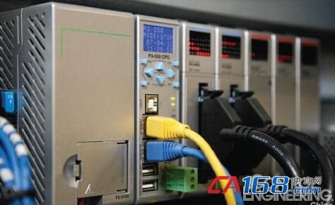
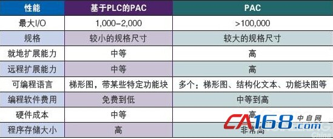
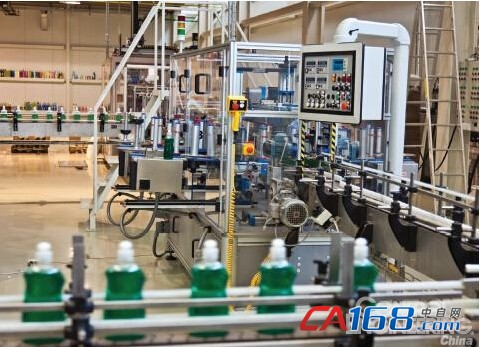

昌和自动化设备有限公司
18125023620
235468338@qq.com
发布日期：2016-07-02；作者:控制工程网
已经有太多关于可编程逻辑控制器（PLC）和可编程自动化控制器（PAC）之间对比的文章了，是的，这两个词汇之间确实有差异，但是，这些差异真的重要吗？在有些情况下也许并不重要，因为随着PLC的不断发展和完善，已经具有和PAC相媲美的功能、性能。
基于PLC的PAC（PLC-basedPAC），这是笔者杜撰的一个词。如果从特性、功能和适合的应用来讲，在大多数应用场合，由于两者之间有相当大的重叠，基于PLC的PAC完全可以有效地代替PAC。尽管在基于PLC的PAC和PAC之间有很多相似点，但是仍有一些关键的差异需要讨论。首先让我们从PLC的进化来寻找一些线索，看看基于PLC的PAC是如何一步步发展壮大的。 
名称的由来
在第一代PLC时期，PLC主要用于替代硬接线继电器和气动计时器，实际上那时PLC被称为可编程控制器，简称PC。但是很快，在1980年代初期，PC这个名称被个人计算机霸占了，于是就经常使用PLC这个词了。PAC这个名称则出现于大概15年前，它的出现也许是为了将功能最强的PLC从其它稍逊一筹的弟兄们中区分开来。
相较于PAC来讲，基于PLC的PAC也许是更好的名称，因为这些控制器融入了过去几十年中PLC和其它技术所取得的进步。生产制造商已经采用了经验证、更强大的PLC硬件设计，并将从PC和移动设备领域的最新、低成本技术应用其中。它们融合了这些技术进步，以满足不断变化的用户需求，提供了基于PLC的PAC系统。
常见功能
现在，如果你想找到一款工业控制器，不具备PLC或PAC所具有的诸多特性，那可能非常困难。但是，PAC的定义却有非常大的不同。很多生产制造商在区分PAC和PLC方面存在困难CONTROLENGINEERINGChina版权所有，原因在于两者之间有很多重要但是共同的特性。这些共同的特性和功能包括：
■高速CPU，提供快速扫描；
■基于标签名的功能；
■大容量板载存储；
■文档存储在控制器中；
■任务管理程序组织；
■多种内置网络协议；
■数据采集。
二者还有很多共有特性，更多的是新技术而不是某个类别的分支。举个例子，更快的扫描时间。相较于千禧年之初的大多数PC机，最新的PLC和PAC处理器芯片的处理频率要高的多。这种技术进步适用于各个等级的控制器。在考虑CPU的性能和费用方面，这更多的是生产制造商的一种偏好。在很多机器控制领域和其它需要非常快的执行速度的场合，都需要这些高速CPU。
其它共同功能则是PLC自然进步或演化的一部分。基于标签名的控制器就是一个例子。由于PLC正在逐渐成为集成系统的一部分——相较于单机版控制器而言，这就使得从固定地址的设计转向基于标签名的系统变得有意义。这样，同一个控制系统内的多个平台，就能够共享一个公用标签名数据库控制工程网版权所有，这一般可以显著降低前端的开发工作。
成本更低的内存，使得基于标签名的系统成为可能。与典型的固定地址PLC系统相比，标签名会占用更多的内存，因此要实现同样的应用功能，它们就需要更多的总内存。更大的内存，还可以允许供应商将程序文件存储在控制器上。这对于现场的故障诊断来讲，是个巨大的便利，而且还解决了一个常见问题：当这些文件没有保存在控制器中时，容易丢失标签名解释器文件。
对于某些PLC和PAC来讲，任务管理器给人的印象以及管理程序的方法都比较类似。对于范围涵盖多个设备/工艺过程的大型项目来讲，程序组织功能是理想的工具。
常用通讯
提供集成或可选的通讯协议，往往是供应商的选择偏好，而不是技术方面的限制。尽管仍然有某些高端控制器只有单个通讯端口，但是很多中、低端的PLC（甚至从1990年代末到2000年代初期），都内置了多个通讯端口。还有很多种选择可以实现额外的端口和通讯协议。
PLC和PAC通用的以太网协议，包括EtherNet/IP和ModbusTCP/IP。这些通讯协议为与多种设备和系统之间的连接，包括ERP和商业系统，提供了一种便捷的方式。很多PLC和PAC还提供串口Modbus和ASCII通讯。这些通讯方式在条形码扫描器、信息通告、电子称、变频器、温度控制器、计时器/计数器和其它设备上比较流行。
重要差异
尽管在PLC和PAC之间有很多相似点，它们之间仍然有一些关键差异。这些差异大多与高端功能相关。在某些超大型和复杂的应用场合，由于仪表数量、远程设备、大量的过程控制和监视等其它方面的需求，可能需要使用PAC系统。这些差异一般与硬件配置、扩展功能以及费用等相关（见表1）。
应用的整体规模，经常是一个用于区分的重要特性。很多小型的PLC，确实也具有通过增加一个总线控制器主模块，来扩展控制系统的初始边界的功能。无论是利用多个机架，还是使用专用的远程I/O，两者都可以将I/O点数扩展到10万甚至更多。这可以大幅度降低系统组态和开发所需要的人工时。更新一些的基于PLC的PAC，一般具有较小的体积，因此，在很多情况下要比PAC小很多，这就允许增加更多的外部I/O。 
还有一些跨界的特性，原来一般将其归为特殊控制器一类，比如冗余、多语言编程、以及特定的硬件规格。
尽管基于PLC的PAC可能只有梯形图逻辑以及某些特定的功能块，以便可以简化运动控制，但是大多数PAC却具有IEC61131-3所列出的五种编程语言：
1.梯形图;
2.功能块图;
3.指令表;
4.结构化文本;
5.顺序功能图。
基于PLC的PAC在行动
现在，基于PLC的PAC能够满足很多领域的应用，从简单的机器控制到更高端的PAC应用（见图2）。为了达到此目的，应用了很多新技术以便实现比原有控制系统更低成本、更好的控制器。
技术进步使得供应商可以提供更快、更多功能的控制器，同时具有更小的物理尺寸。这使得基于PLC的PAC，能够适用于更广泛的机器控制应用。很多这样的机器，都需要较快的扫描时间，从而使得其制造商具有更强的竞争力，并满足设计规格需求。 
图2：无论是基于PLC的PAC，还是PAC，都能很好的控制这个大型灌装生产线，最终的选择取决于特定的功能和性能要求。
过去，机器制造商面临着两难的选择：如果利用较小规格的PLC，可以满足I/O点的需求及物理空间的限制，但是在性能方面则差强人意。一种替代方案是选择大型PLC或者PAC系统。在大多数情况下，对于简单的机器控制需求来讲，大型控制器有点大材小用，但是又不能不用，否则便无法满足某种特定的应用需求。
基于PLC的PAC系统非常适用于小型、在成本方面要求比较高的应用场合，而且它还可以用于需要处理成百上千个模拟量通道的应用场合。很多这样的控制器，可以将数据点记录到保存在集成存储端口的文件中，然后利用内置的网络服务器经由标准浏览器来获取这些文件。
典型的基于PLC的PAC系统的大容量存储功能，使其非常适合于创建1-D或2-D的矩阵来追踪产品、质量特性、运输数据和客户信息。基于PLC的PAC，具有基于标签名的特性，这就意味着可以非常便捷的与HMI/SCADA、OPC服务器以及数据库接口。
PAC满足高端挑战
利用更多特定领域的集成，PAC环境能够提供独特的收益。先进运动控制和视觉应用，经常需要PAC的强大功能，是两个非常好的例子。利用单一PAC平台，集成多轴协调运动、触发视觉系统、收集检查结果，在上述方面确实有其优势。
在更大、但是也更昂贵的PAC平台上，生产制造商一般会提供可以实现可编程安全以及其它特定功能的选项。这些非常特殊的要求，在市场中占有的份额比较小，但是对于某些特定用户却十分重要。
选择适合的解决方案
在设计控制系统时，不应该按照PAC、PLC或基于PLC的PAC的定义来选择。相反，用户应该根据其特定应用来确定其对控制器的需求，选择最适合的产品。
不管应用场合是机器控制、运动控制、过程控制、测绘和数据采集、分布式控制和企业互联互通，还是上述几种特性的组合，控制器的定义应该依据应用需求和控制器的功能。
wwww.chzdh.net
18125023620
235468338@qq.com